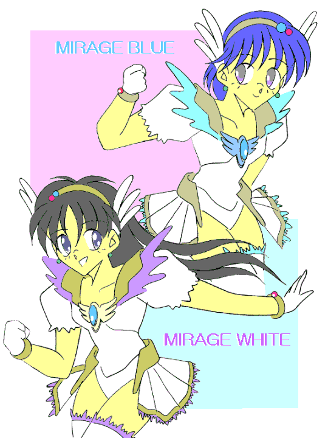

| あたし、三代真奈美(みしろ・まなみ)１３歳。私立津留木（つるぎ）学園に転校してきたばかりの中学２年生。 じ・つ・は、愛と平和を守る正義の美少女ミラージュホワイトなの。 ここ新間(しんま)市では邪霊界との「扉」が開いちゃって、魔獣や魔人が現われてもう大変！！ そこであたしがお母さんから受け継いだブローチで変身して悪い奴らと戦うことにしたの。 奴らはみんな手強いけれど、妖精のペルと一緒に愛と勇気で戦うわ！！ だからみんな、あたしたちのこと応援してねっ！！(チュッ！) |
「…………か、母さん、これは一体？」
「美少女ヒロイン物って、番組の最初に自己紹介をしている事があるじゃない。だからちょっと作ってみたの」
「作るなっ！！ 大体なんだよこの『三代真奈美』って……どっかのアニメヒロインみたいな名前は？」
「だって、女の子が『武士(たけし)』なんて名前じゃ変じゃない」
「俺はっ！！お、と、こ、だあぁぁぁ———っ！！」
「あと８時間は女の子だけどね」
「うっさいっ！！」
変身美少女戦士ミラージュガール
第二話：気になるアイツは敵か？ 味方か？ 恋人か！？
作：ライターマン
俺の名前は三代武士(みしろ・たけし)。……もちろん男で、決して「真奈美」なんて名前ではない！！
だけど俺には、「邪霊界からの魔物と戦うために美少女戦士ミラージュホワイトに変身している」という、誰にも言えない秘密があった。
……言っておくけど、俺には女装趣味や女性への変身願望なんてものはない！！
どういう訳か女の子にしか効果がないはずの変身ブローチが、俺を適格者と間違えてしまって変身させてしまったのだ。
幸い（？）な事に、変身解除後約１０時間で身体が元に戻るのだけど、それまでは「女の子」として過ごさなければならない。
母さんは娘が出来たと喜んで（女の子の身体のときは真奈美、真奈美と呼んで）いるけど、俺としては早く邪霊界との扉を閉じて、変身しなくてすむようになりたいと思っている。
キーン、コーン、カーン、コーン……
昼休みを告げるチャイムと同時に、教室の中はざわめきで騒然となった。
机を寄せ合って弁当を広げる者、学食や購買へダッシュする者、ボールなどを持って屋上や校庭に出る者など、みんなそれぞれの時間を過ごそうとしていた。
俺は沢田や古木たちと一緒に弁当を食べていたんだけど、一足先に食べ終えた沢田がノートを開いてじっと見ているのに気がついた。
「沢田、何だいそれ？」
「え？ ……ああ、これか。これは、この前見た『正義の味方』の情報だよ」
そう言って沢田はノートの中身を俺たちに見せた。
沢田は一週間ほど前に、俺がミラージュホワイトとして魔獣と戦ったときに現場に居合わせていた。
すぐにその場を逃げ出したこともあって、そのときの話は大人にはあまり信用してもらえなかったらしい。
同級生には信じてもらえたけのだけど、沢田にとっては不満だったようで、あれからいろいろ調べていたようだ。
ノートの中は手書きの文字で埋まっていて、ところどころで横線を引かれて消されていたり、二重丸がついていたりしていた。
「お前、これだけの情報を一人で集めたのか？」
「どうだすごいだろ……なんてね。……へへっ、本当は親父のパソコンを使ってインターネットにアクセスして、情報収集の掲示板ってのを見つけたんだ」
「掲示板でこんな事を話してるのか？」
「専用の掲示板を作った人がいるんだよ。もっとも変な書き込みが多くってさ、『Ｍ○○星雲から来た宇宙人だ』とか、『胸に7つの傷があって経絡秘孔を突いて相手を倒した』なんて書き込みの方が多いんだけどね」
「なんだそりゃ？」
「イタズラで書き込む奴がいるらしいんだよ。だから掲示板の中から本物らしいのを抜き出してるんだけど……」
「よくやるなあ。あ、でもよく見ると髪型とか服の色とかバラバラだぜ？」
「うーん、やっぱ慌てて逃げ出したパターンが多いから、動転してあやふやな部分もあるみたいなんだ」
「そうか、ところでこんなに情報を集めて一体どうしようと言うんだ？」
「もちろんその正体を突き止める！！」
「……突き止めたら？」
「交際を申し込む！！」
拳に力を込め、目を輝かせて宣言した沢田の言葉に、俺たちは「アハハッ」と笑ったが……俺のこめかみからは一筋の冷や汗が流れ落ちた。
もしこいつらがあの少女の正体が同級生で、しかも目の前にいるこの俺だと知ったら……
こいつらには絶対正体を知られないようにしておこう。
「三代君！」
放課後、管理棟への渡り廊下を歩いていた俺は、後ろから声をかけられた。
振り返ってみると、古木が手を上げながらこっちに近付いてきた。
「三代君はこっちに何か用があるのかい？」
「ああ、この前図書室から借りた本を返しに。そっちは？」
「僕は……先生……に呼ばれたから」
古木は少し言いにくそうに言った。何か問題でも起こしたのだろうか？
疑問に思った俺だったが、それ以上は詮索しない事にした。
「この学校には慣れた？」
「まあね」「それはよかった」
そう言って笑った古木の顔に、俺はドキッとした。
最近はクラスメイトとして会話をしているので慣れてきたのだが、こいつにはなんとなく謎めいた雰囲気があった。
それにこいつが微笑むと胸騒ぎ……ではないと思うが、落ち着かなくなるのは何故だろうか？
彼は今までに何回か俺の顔を見て今と同じように微笑んだ事があるのだが、俺には何故微笑まれているのかが分からなかった。
俺は尋ねてみる事にした。
「古木君は時々俺の顔を見て笑ってるけど、どうしてなんだ？」
「あっ……ご、ごめん」
「い、いや、別に謝る事じゃないよ。ただなんでかなと思って」
「実は……気になる女の子がいて……その娘と三代君が似てるような気がして、『そんな馬鹿な』って笑ってるんだ。三代君は男なのに、こんな事を考えるなんて変だろ？」
「……その女の子とは、どこで出会ったんだ？」「北の森近くの公園」
古木の答えを聞いて、俺は内心で慌てた。その女の子とは恐らく……
「古木君はその女の子の事、好きなのか？」
「分からない。でもその女の子とはもう一度会わなくちゃならないんだ」
そう答える古木の顔は少し赤くなっていて、彼がその女の子に好意を持っているのは間違いないようだった。
動揺していた俺は、管理棟に到着したのを幸いに、
「図書室は上の階だから、俺はこれで。じゃあな」
と言って手を振って、古木と別れて階段を駆け上がった。
図書室に入ろうとした俺は、ちょうど出てきた大人の女の人とすれ違ったけど、女の人は俺の腕をガシッと掴んだ。
「な、何をするんです！？」
「あなた……いい骨格してるわね」
「ええっ！？」
なんかアブなそうな人である。
何でこんな人が学校に？ と思った俺だったが、女の人が白衣を着ているのを見て思い出した。
この人は確か病院に勤めている医者で、週に一日の割合で校医として学校に来ている人だった。
この前あった身体測定で見ていたのだが、すっかり忘れていた。
「この辺の鎖骨なんかいい形をしてるし……今度病院の機械でじっくり調べたいわね」
「げげっ！！ せ、先生、もしかしてお名前は椿って言いません？」
「違うわよ。それよりもあなた、お母さんの名前は初枝って言わない？」
「え！？ な、何で分かるんです？」
「骨格を見てたらなんとなくね。あなた名前は？」
「み、三代武士……です」
「ふうん、じゃあ三代武士君が今はミラージュホワイトなのかな？」
「なっ！？ な、な、な、何の事ですか！？」
「心配しないで。誰にも言わないから。あたし知ってたの……あなたのお母さんが、昔ミラージュホワイトだった事を」
「先生……一体先生って何者なんです？」
「あたしは……」「あっ！！ 先生、話は後で。とりあえずこの本、代わりに返しておいて下さい」
ペルの変身した小鳥が外から窓をつついてるのを見つけた俺は、返却予定だった本を彼女に渡すと階段を駆け下りていった。
「ここか……」
そこは意外にも、学校のすぐそばの小高い丘だった。
全体が木々で覆われており、確か丘の上の方に誰もいなくなった山寺がある他は何もない所だった。
俺は石段を見つけてそこを上ろうとしたのだが、そのとき……
「おーい三代」
と俺を呼ぶ声が聞こえたので、振り返ってみると沢田たち三人が走りながらこちらに近づいて来た。
「三代、どうしたんだこんな所で？」
「あ、ああ。ちょっとこの上の山寺ってのを見てみたくなってな。……そっちこそどうしたんだ？ こんな所へ来て」
沢田の質問にあいまいに答えて、逆に質問を返す。
「家に帰って例の掲示板を見たら、昨日の夜のうちに書き込みがあって、この近くでうなり声みたいな音を聞いたってあったから、調べに来たんだ」
「お前らこの前怪物に襲われたのに、まだ懲りてないのか？」
「出てきそうになったらすぐに逃げるよ。で、正義の味方が現われたら、戦いが終わってから追いかけるのさ」
（こいつらいい根性してるぜ……）
俺は沢田たちのめげない性格に、感心するやらあきれるやらで思わず笑ってしまったけど、このまま一緒に行動していたら、いざという時に変身できない。
俺は山寺にたどり着いたのを幸いに、「ここで調べるから」と言って、奥へ進む沢田達と別れる事にした。
「さて、そろそろ準備をしておくか」
俺はペルが魔物の詳しい位置を捜しに行ってる間に、カバンを柱の後ろに隠し、変身のためのブローチを取り出そうとした。
だが、俺がブローチを手にしたまさにその瞬間……
「うわっ！！」
俺は背後に殺気を感じて、慌てて飛び退いた。
グルルルル……ッ
魔獣は俺に狙いを定めて、飛びかかってこようとしていた。
変身しなければ！！ そう思う俺だったが、今変身して途中で襲われたらそれでおしまいである。
何とかしてこの場を離れたかったけど、いい方法が浮かばず焦っていると突然、
「止めなさい！！」
俺は思わず声のした方を見た。
「邪悪なる力で人を襲い混乱を広げる悪しき存在よ。お前たちの行いはこのミラージュブルーが許さない……わ。清浄なる青き水の流れで、お前の身体をバラバラに砕いてやる……から、覚悟しな……さいっ！」
山寺の屋根の上に立っていた人物。それはミラージュホワイトと同じ……ただし色は青色のコスチュームを着たショートカットの女の子だった！！
「早くこの場を離れて！！」
ミラージュブルーを名乗った女の子は、目の前に飛び降りると俺にそう言った。
俺はすぐに石段を駆け降りようとしたのだが、魔獣はまわり込んでなおも俺を襲おうと飛び掛った。
だが、ミラージュブルーが魔獣と組み合ってそれを阻止した。
俺は石段を少し降り、山寺が見えなくなったところで横の茂みに飛び込んだ。
そしてブローチを右手に持つと、目を閉じて大きく息を吸い込み、精神を集中して変身のためのキーワードを唱えた。
「ミラージュマジック ・ ミラクルチャージ！！」
するとブローチが光り出し、続いて俺の衣服が光の粒子に変わっていく。
光の粒子は俺の周りを回り出し、裸の状態の俺は光に包まれた。
光に包まれた俺の身体が徐々に変化していく。
髪がサラサラになって長くなり、腰のあたりまで伸びていく。
肌が白くなり、指や腕、それに足がスラリと細くなっていく。
腰の部分が大きくなり、逆にウエストの部分が細く括れていく。
そして胸の部分が少しずつ膨らみ、やがて二つの丸い塊になる。
身体の変化が終わると、俺を囲んでいた光の粒子が集まり始める。やがてそれらは光沢のある白い生地で出来た服とミニスカート、手袋、ブーツ、ヘアバンドになって俺の身体を包み、そしてブローチが胸の中心に固定された。
戦いはミラージュブルーの方が劣勢になっていた。
俺を守るために魔獣と組み合ったものの、格闘はあまり得意ではないみたいで、なかなか攻撃が出来ないでいた。
「はっ！！」
俺はミラージュブルーに気をとられている魔獣に近づき、腰を低く安定させた体勢で肩をぶち当てて魔獣を弾き飛ばした。
「白き光の美少女戦士ミラージュホワイト、ただいま参上！！」
そう言って俺は不敵な笑みをニヤリと浮かべた。
言ってみたかったんだよなこのセリフ。いかにも正義の味方って感じでかっこよくて。
……「美少女」ってのがなければ、もっとよかったんだけど。

弾き飛ばされた魔獣は、今度は俺に襲いかかってきた。
だが、俺は魔獣の攻撃をかわして魔獣の中心部に肘打ちを叩き込み、数歩下がったところで回し蹴りで蹴り飛ばした。
「下がって！！」
ミラージュブルーが叫ぶ！！ 見ると両腕をクロスさせて必殺技の体勢に入っていた。
そして両腕を水平に開く。ミラージュブルーの周りに白い靄が生じ始めた。
それはやがていくつもの水の塊になり、ミラージュブルーの右腕が魔獣の方へ向いた。
「アクアストーム！！」
ミラージュブルーの声とともに水の塊は一斉に魔獣に襲い掛かり、魔獣の姿は水と泡に包まれ見えなくなった。
やがて水が再び霞になり消えていったとき……魔獣の姿もまた消滅した。
「君がミラージュブルー、青き水の戦士……か」
戦いが終わった後、つぶやいた俺の言葉にその女の子はコクリと頷いた。
母さんから話だけは聞いていた。昔、母さんがミラージュホワイトだった頃、他に青と赤の戦士がいた事を。
沢田のノートに服の色の違う人物の事が書かれているのを見たときに、もしかしたら……と思ってはいたけど、実際に目にすると驚きと嬉しさがこみ上げてきた。
自分は一人で戦っていたのではない。他にも同じ目的を持った仲間がいるのだ……と。
小鳥の姿で降りてきたペルも、嬉しそうに喋り始めた。.
「よかったわ仲間が増えて。あ、自己紹介が遅れましたね。私は精霊界から来た妖精でペルティノと言います。ブルーは普段どこにいるんです？」
だが、その言葉を聞いたブルーは険しい表情をして
「ごめんなさい。今は自分の正体について言いたくありません。いずれ話すときも来るでしょうけど……少し時間を下さい。それじゃあまたどこかで」
そう言ってブルーはぺこりとお辞儀をすると、ジャンプして森の中に消えていった。
「『正体を明かすことなく去って行く謎の助っ人』かあ。なんかかっこいいね」
「何言ってんですか。正体が分からないと、いざという時に協力する事ができないじゃないですか！！それにしてもどうして仲間に正体を明かしたくないのでしょう？」
「さあね。ただ俺も他の仲間に正体は？ って聞かれると、ためらってしまうけどね」
「どうして？」
「だって女の子の格好をして戦っているのに、その正体が実は男……なんて恥ずかしくてさ。とてもじゃないけどすぐには言えないよ」
「ふうん、そんなもんですか？ じゃあ、ブルーの正体ももしかしたら……」
「わはははは、まっさかあ……おっといけない、もうすぐタイムリミットだ！！」
俺は変身を解除するために学校に戻ると、トイレに入り込もうとした。
だけど運悪く、クラブ活動を終えた連中が教室や廊下を歩いていて、誰にも見られずに入る事が出来なかった。
困った俺だったが、そのとき……
「こっちよ！！」
その言葉に振り返ると、管理棟一階の保健室から先程の女の人が手招きをしていた。
「今は誰もいないから、入ってらっしゃい！！」
言われて俺は保健室の中に入った。
「すいません、助かります」
「気にしないで。それにしてもどうして学校まできたの？ どこか目立たない場所で変身を解除すれば面倒にならないのに」
「俺は着替えなきゃならないので、誰かに見られる可能性のあるところで解除する訳にはいかないんですよ」
相手が俺の正体を知っているので、俺は男言葉で喋ると肩をすくめた。
「着替える？」
「はい、ちょっと離れてください……ディスチャージ」
俺が変身解除のキーワードを唱えると、それまで身に着けていたコスチュームが光の粒子に変換して俺の周りを回り始め、すぐに収束して変身前の服装になったのだが……
「あらまあ……身体は女の子のままなの？」「……はい」
男子用の学生服に身を包んでいるものの、胸と腰の部分が丸く膨らんで、髪が腰の位置まで伸びた俺は顔を赤くして頷いた。
俺はベッドの方に移動すると、カーテンを閉めてカバンの中から着替えを入れたバッグを取り出した。
俺が上着を脱ぎ、カッターシャツのボタンを外し始めたとき、女の人が俺に声をかけた。
「いつまで女の子なの？ さっき会った時は男の子だったから永遠にって事はないわよね？」
「はい、大体１０時間ぐらいで元に戻ります」
そう言いながら、俺はシャツを脱いでブラジャーを取り上げた。そして乳房をカップの中に入れてから手を後ろに回してホックを留めた。
「それにしても珍しい事例ね。……もっとも男の子がミラージュガールになるのも珍しいんだけど」
「そうですね」
俺はズボンとブリーフを脱ぎ、ショーツを穿いた。
「医者としては身体の中で何が起きているのかじっくり調べたいわね。今から病院に行ってみる？」
「……解剖するんですか？」
「しないわよ。CTスキャンにMRI、超音波装置とかを使って身体の中を徹底的に調べるだけよ」
「できれば遠慮したいです……」
顔を引きつらせながらそう答えて、俺はワンピースの服を頭からすっぽりとかぶった。
長くなった髪を左右に分けながら、今度は俺が声をかけた。
「そういえば、さっき現場でミラージュブルーに会いましたよ」
「あらそう。……どうだった？ あなたから見てミラージュブルーは」
「力はありましたけど、格闘はあまり上手じゃなかったですね」
「あの子は運動神経はあるけど、優しいから取っ組み合いは苦手なのよ」
「あの子？」
「今のミラージュブルーはあたしの子なのよ。もし得意なら、今度あの子に格闘を教えてくれる？」
「まあ苦手じゃないですけど……俺、男だから女の子と取っ組み合いをするのは……」
「大丈夫よ。あの子も普段は男だから」
「ふうん、そうなんだ…………って、男ぉ！？」
分けた髪をアップしてリボンを結び終えた俺は、驚きのあまりカーテンを開けながら叫んだ。するとその時……
「母さん終わったよ。そろそろ帰る準備をしないと……あっ！！」「えっ！？ そ、そんな……」
廊下側からのドアを開けて入ってきたのは……古木だった。
「紹介するわ。この子がミラージュブルーであり、私の息子の古木祐一（ふるき・ゆういち）よ。……祐一、ここにいる人がミラージュホワイトの三代武士君よ。彼はお前と違って変身したらしばらく女の子のままだそうだから、しっかりサポートしてあげなさい」
女の人……古木のお母さんはそう言ってお互いを紹介していたが、俺たちは呆然としてお互いの顔を見ていた。
よりにもよって同じクラスの古木に正体を知られるとは……そしてよりにもよってその古木が、まさか俺と同じように女の子に変身して魔物と戦っていたなんて……
そして古木は、振るえる手で俺を指差した。
「み……三代……武士……君？」
俺はバツの悪い顔をして、コクンと頷く。
「……ほ、本当に？」
俺はもう一度頷いた。
「あ……あは……あはははは…………うわああああああぁぁぁんっ！！」
古木はしばらく乾いた笑いを上げた後、急に泣き出してその場を走り去った。
「どうしたのかしらあの子？」
「たぶん……相当にショックだったんじゃないかと思います」
俺は古木のお母さんの疑問に答えながら、心の中で合掌した。
ほのかに恋心を抱いていた相手が、実は男だったのだ。……ショックを受けても仕方のないことだろう。
すまん古木、許してくれ。悪気はなかったんだっ！！
こうして俺に仲間が増え、ミラージュガールは二人になった。
……一人はしばらく使い物にならないかもしれないけど。
（おわり）
おことわり
この物語はフィクションです。劇中に出てくる人物、団体は全て架空の物で実在の物とは何の関係もありません。
あとがき
どうも、ライターマンです。
ミラージュガール第二話、お楽しみいただけたでしょうか？
ああ、また一人新たな犠牲者（？）が。まあ、予想通りという方もいらっしゃるとは思いますが……
ミラージュブルー元気を出すんだ。変身を解除すりゃすぐ元に戻れる分だけまだ君はましなんだ！！（違）
さて予定ではミラージュガールは全部で三人。残る一人、赤色の戦士は次回で登場予定です。
その正体は一体誰か？今度こそ本物の女の子なのか、それとも？
謎と期待（爆）をはらみつつ、今回はこれにて失礼します。
それではまた。
□ 感想はこちらに □